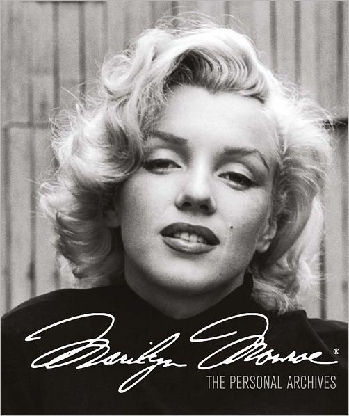

According to The Guide to United States Popular Culture, "as an icon of American popular culture, Monroe's few rivals in popularity include Elvis Presley and Mickey Mouse ... no other star has ever inspired such a wide range of emotions—from lust to pity, from envy to remorse." Art historian Gail Levin stated that Monroe may have been "the most photographed person of the 20th century", and The American Film Institute has named her the sixth greatest female screen legend in American film history. The Smithsonian Institution has included her on their list of "100 Most Significant Americans of All Time", and both Variety and VH1 have placed her in the top ten in their rankings of the greatest popular culture icons of the twentieth century.
Hundreds of books have been written about Monroe. She has been the subject of films, plays, operas, and songs, and has influenced artists and entertainers such as Andy Warhol and Madonna.[299][300] She also remains a valuable brand: her image and name have been licensed for hundreds of products, and she has been featured in advertising for brands such as Max Factor, Chanel, Mercedes-Benz, and Absolut Vodka.
Monroe's enduring popularity is linked to her conflicted public image. On the one hand, she remains a sex symbol, beauty icon and one of the most famous stars of classical Hollywood cinema. On the other, she is also remembered for her troubled private life, unstable childhood, struggle for professional respect, as well as her death and the conspiracy theories that surrounded it. She has been written about by scholars and journalists who are interested in gender and feminism; these writers include Gloria Steinem, Jacqueline Rose, Molly Haskell, Sarah Churchwell, and Lois Banner. Some, such as Steinem, have viewed her as a victim of the studio system. Others, such as Haskell, Rose, and Churchwell, have instead stressed Monroe's proactive role in her career and her participation in the creation of her public persona.
Due to the contrast between her stardom and troubled private life, Monroe is closely linked to broader discussions about modern phenomena such as mass media, fame, and consumer culture. According to academic Susanne Hamscha, Monroe has continued relevance to ongoing discussions about modern society, and she is "never completely situated in one time or place" but has become "a surface on which narratives of American culture can be (re-)constructed", and "functions as a cultural type that can be reproduced, transformed, translated into new contexts, and enacted by other people". Similarly, Banner has called Monroe the "eternal shapeshifter" who is re-created by "each generation, even each individual ... to their own specifications".
Monroe remains a cultural icon, but critics are divided on her legacy as an actress. David Thomson called her body of work "insubstantial" and Pauline Kael wrote that she could not act, but rather "used her lack of an actress's skills to amuse the public. She had the wit or crassness or desperation to turn cheesecake into acting—and vice versa; she did what others had the 'good taste' not to do". In contrast, Peter Bradshaw wrote that Monroe was a talented comedian who "understood how comedy achieved its effects", and Roger Ebert wrote that "Monroe's eccentricities and neuroses on sets became notorious, but studios put up with her long after any other actress would have been blackballed because what they got back on the screen was magical". Similarly, Jonathan Rosenbaum stated that "she subtly subverted the sexist content of her material" and that "the difficulty some people have discerning Monroe's intelligence as an actress seems rooted in the ideology of a repressive era, when superfeminine women weren't supposed to be smart".